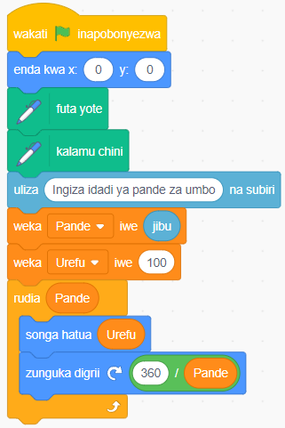
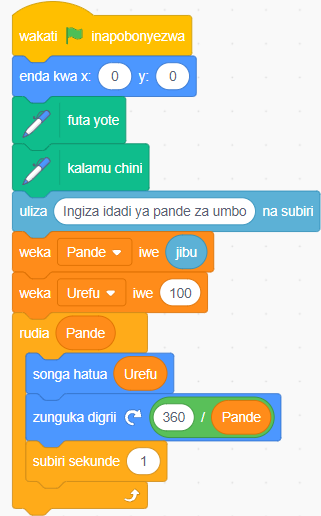

Chora umbo lolote kwa kubainisha idadi ya pande na urefu wa kila upande wa umbo hilo.
1. Chagua kihusika cha kalamu kutoka kwenye orodha ya vihusika.
2. Bofya bloku la Vibadilika kisha tengeneza vibadilika viwili vinavyoitwa Urefu na Pande.
3. Bofya bloku la Matukio kisha chagua Bofya bloku la wakati bendera ya kijani inapobonyezwa.
4. Bofya bloku la Mwendo kisha chagua enda kwa x (0) y (0) kuweka nafasi ya awali ya kihusika kuwa katikati ya jukwaa (0, 0).
5. Bofya bloku la Kalamu kisha chagua bloku la futa yote na kalamu chini.
6. Bofya bloku la Hisi kisha chagua bloku la uliza ( ) na subiri ili kumruhusu mtumiaji kuingiza idadi ya pande.
7. Bofya bloku la Vibadilika kisha chagua bloku la weka (jina la kibadilika) iwe ( ) na tumia kuweka urefu wa pande kuwa 100.
8. Bofya bloku la Kidhibiti kisha chagua bloku la rudia ( ) na weka kibadilika cha Pande kama sharti la kurudia. Katika bloku la rudia
( ), ongeza bloku la kusogeza kihusika kwa urefu uliowekwa, na bloku la kugeuza kihusika. Angalia Kielelezo namba 16(a).
9. Bofya bendera ya kijani ili kuanzisha programu. Utahitajika kuingiza idadi ya pande. Jaribu kuingiza namba 3.
10. Ongeza bloku ya ficha ili kuboresha mwonekano wa jinsi umbo lililochorwa. Angalia Kielelezo namba 16(b).


Kielelezo namba 16: Programu ya kuchora maumbo mbalimbali